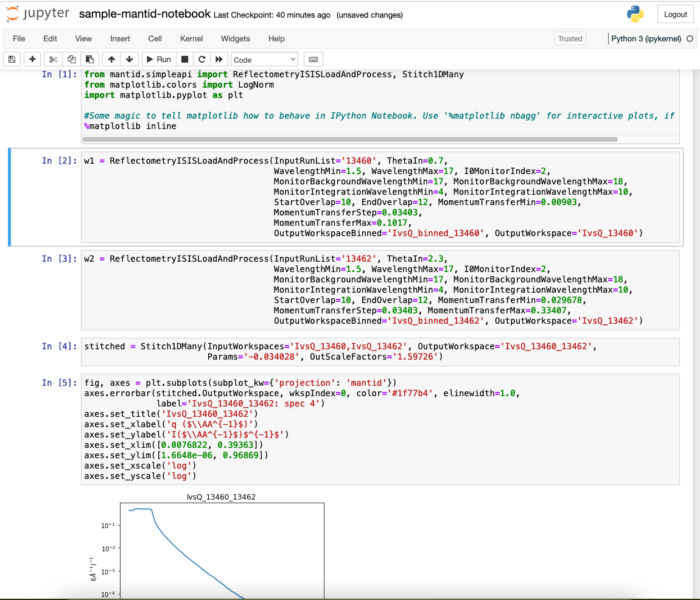
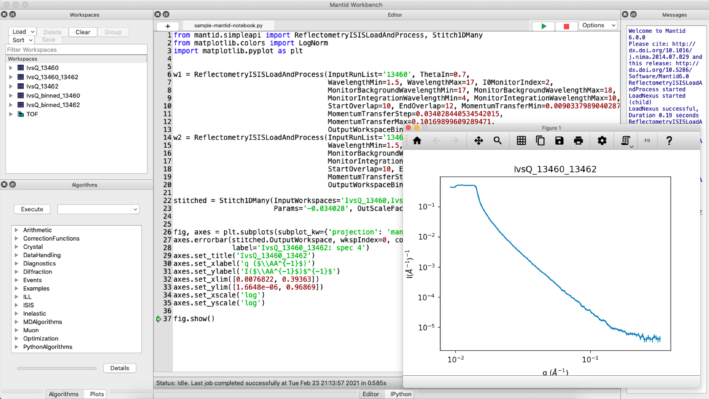

<a class="reference internal image-reference" href="#">
    
        
</a>

<div class="index-top-images">
    <figure class="align-default" id="id1">
        
        <figcaption>
            <p><span class="caption-text">Mantid in Jupyter</span><a class="headerlink" href="#id1"
                    title="Permalink to this image"></a></p>
        </figcaption>
    </figure>

    <figure class="align-default" id="id2">
        
        <figcaption>
            <p><span class="caption-text">MantidWorkbench</span><a class="headerlink" href="#id2"
                    title="Permalink to this image"></a></p>
        </figcaption>
    </figure>

</div>
